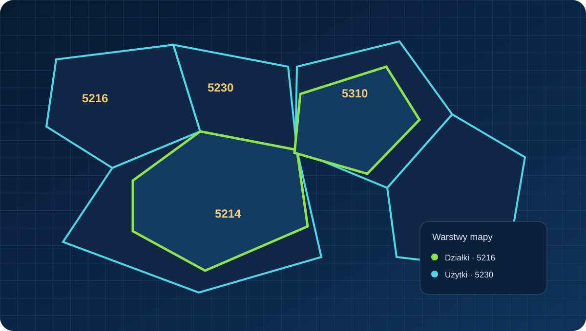
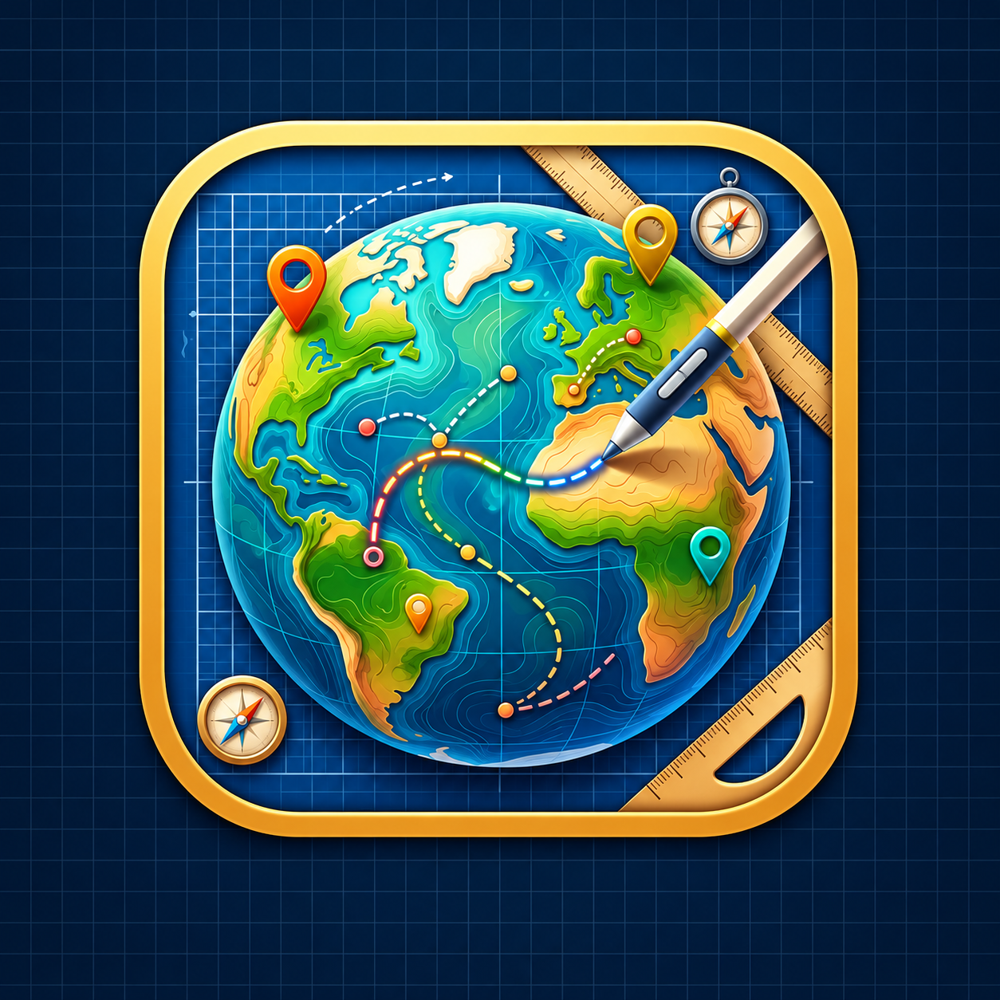
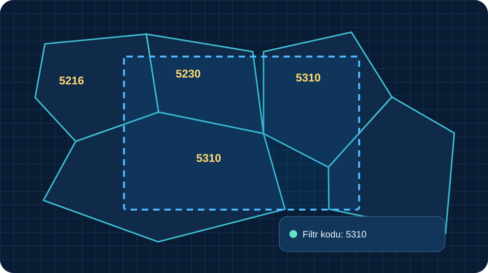
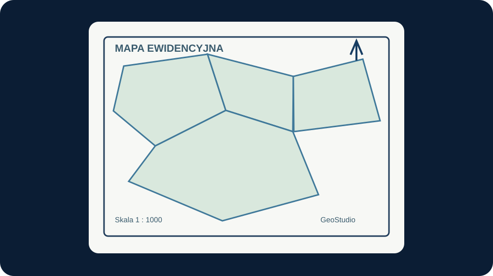

Mapa i warstwy
Przeglądaj geometrie, kody oraz opisy. Włączaj i wyłączaj warstwy według potrzeb.

GeoStudioGeoStudio to nowoczesne środowisko do przeglądania i edycji map geodezyjnych. Pracuj na warstwach, szybko wybieraj obiekty po kodzie i przygotowuj czytelne eksporty.
Wersja 0.15.0 · wczesny dostęp · Windows 10/11
GeoStudio łączy czytelny widok mapy, narzędzia edycji i kontrolę warstw w jednym oknie.

Przeglądaj geometrie, kody oraz opisy. Włączaj i wyłączaj warstwy według potrzeb.

Przeciągnij obszar i ogranicz wybór do wybranego kodu GEO-MAP.

Przygotuj obraz mapy albo plik DXF i pracuj z elementami układu.
Ilustracje funkcji mają charakter poglądowy; nie są zrzutami ekranu programu.
Wybierz kod na liście filtra i przeciągnij prostokąt przez mapę. Zaznaczą się tylko widoczne obiekty, których geometria przecina wskazany obszar.
Twórz geometrię i aktualizuj atrybuty bez nadpisywania mapy źródłowej.
Precyzyjniej prowadź rysowanie, korzystając z wierzchołków i krawędzi.
Łącz pracę z lokalnymi rastrami i podkładami WMS.
Przygotowuj pliki PNG, JPG, TIFF oraz uproszczony eksport DXF.
Kontroluj widoczność kodów, użytków i pozostałych grup mapy.
Zapisuj rezultat do nowego pliku i zachowuj kopię materiału wejściowego.
Wersja wczesnego dostępu z zaznaczaniem prostokątem i filtrem kodu. Wydanie EXE pojawi się po zbudowaniu przez GitHub Actions.
To wczesna wersja projektu. Zweryfikuj pliki i wyniki we własnym procesie pracy geodezyjnej.